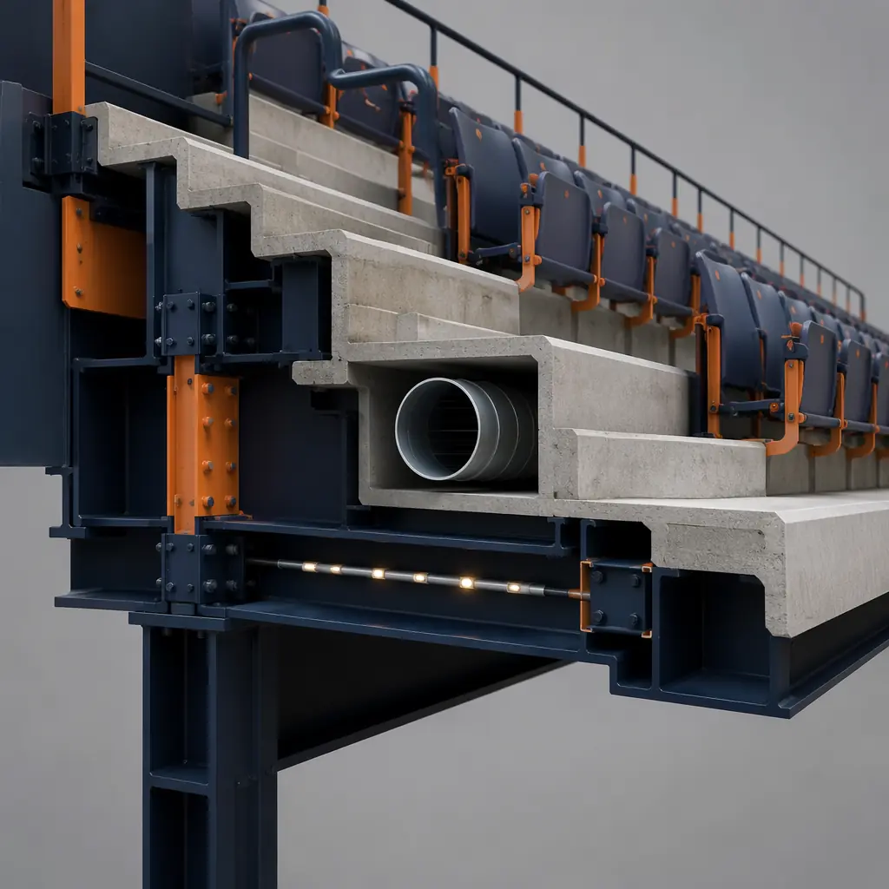
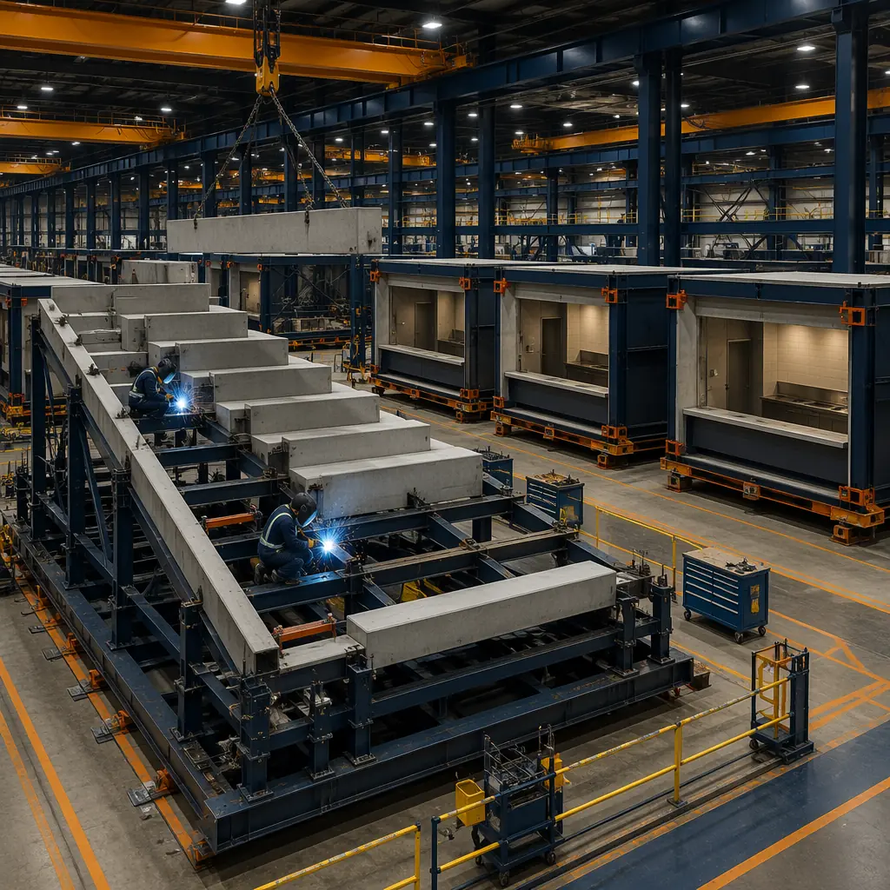

The global sports venue construction market is projected to reach $42.8 billion by 2028 (Grand View Research), driven by three intersecting trends: the professional sports franchise cycle of stadium replacement every 25–35 years (22 of 32 NFL stadiums and 18 of 30 NBA arenas are more than 20 years old), the NCAA Division I arms race for training and competition facilities that attract recruits (median athletic facility spending of $95 million per Power Five university over the past decade), and the rapid growth of youth sports tourism — a $39.7 billion industry (Sports Events & Tourism Association) that is driving demand for multi-field complexes with spectator amenities at the community level. A conventional 15,000-seat stadium takes 30–42 months to build and costs $1,800–$2,800 per seat — translating to $27–42 million — with schedule risk concentrated in the single-threaded sequence of site work, structural steel erection, precast concrete seating installation, and MEP fit-out of concourse buildings. Modular prefabricated construction compresses the delivery timeline to 18–24 months by manufacturing seating modules, concourse buildings, locker room facilities, and press box structures as factory-built units while site civil works and foundation systems proceed concurrently. For a university or municipality funding a $35 million stadium through a combination of donor contributions and revenue bonds at 5.5%, compressing the construction period by 12–18 months saves $1.9–$2.9 million in financing costs alone — capital that can be redirected to scoreboards, sound systems, and fan experience amenities. Our analysis of modular gym and fitness center construction documents the same factory-built quality and schedule compression advantages for smaller-scale sports facilities, and our coverage of modular sports and recreation complexes addresses the broader community sports center category.

The Structural Challenge of Stadium Construction — And Why Modular Changes the Equation
Stadiums present a structural engineering challenge that is fundamentally different from standard commercial buildings: the seating bowl is a single integrated structure where the structural frame, precast concrete seating treads and risers, concourse slab on metal deck, and overhead canopy are interdependent. In conventional construction, this interdependence creates a rigid construction sequence — structural steel erection (6–9 months) → precast seating installation (5–7 months) → concourse slab pour and MEP rough-in (4–6 months) → interior fit-out of concourse buildings (5–8 months) — in which each phase must complete before the next can begin. The result is a 20–30 month vertical construction duration where the workforce is concentrated in a small number of trades at any given time, and any delay in structural steel delivery or precast erection cascades through every subsequent trade. Modular construction addresses this by decomposing the stadium into independently manufactured modules:
- Seating modules: Factory-built structural steel frames with pre-installed precast concrete seating treads and risers, integrated aisle lighting conduit, railing anchor points, and under-seat HVAC supply plenums. Each module represents a 40–60 ft wide × 30–40 ft deep section of the seating bowl, manufactured to the exact radius and slope of the bowl geometry. The seating modules arrive on site with the precast seating already set and grouted — eliminating the 5–7 months of on-site precast erection that dominates the critical path of conventional stadium construction.
- Concourse modules: Two-story steel-framed modules that form the enclosed concourse level behind the seating bowl. Each module contains the concourse circulation space with factory-installed concession counters (pre-plumbed with grease waste, potable water, and electrical for cooking equipment), restroom plumbing rough-in (floor-mounted water closets with wall carriers pre-installed), and MEP risers that connect to the stadium's central mechanical plant. The concourse modules arrive as weathertight, enclosed structures with exterior wall panels, glazing, and roofing already installed — eliminating 8–12 months of sequential building enclosure and interior fit-out on site.
- Premium space modules: Factory-built suite and club seat modules with pre-installed millwork, AV rough-in, and dedicated HVAC zoning — compressing the 4–6 months of luxury suite fit-out that conventionally follows building enclosure into 8–10 weeks of factory production concurrent with site civil works.
- Press box and broadcast modules: Elevated modules with structural steel frame designed for 150 PSF live load capacity (broadcast equipment), factory-installed cable tray for broadcast cabling (SDI, audio multi-pair, Ethernet for IP-based production), and acoustic isolation to NC-25 criteria for commentary positions. These modules eliminate the 4–6 weeks of field AV integration that conventionally occurs at the end of the construction schedule when broadcast partners are eager to begin pre-season testing — a schedule risk. For a comparison of modular delivery timelines versus conventional construction, see our definitive comparison of modular vs. traditional construction.
- Ancillary building modules: Ticket office, team store, first aid station, and security command center modules — smaller buildings that in conventional construction require separate foundation, building enclosure, and fit-out contracts, adding complexity and schedule risk. Modular delivery consolidates these into factory-built units that arrive as completed buildings requiring only utility connections. This approach parallels the integrated facility delivery methodology in our comparison of modular vs. ICF construction methods.

Team Facilities — Locker Rooms, Training Rooms, and Player Amenities
Professional and collegiate sports facilities dedicate 25,000–40,000 sq ft to team-exclusive spaces — home and visitor locker rooms, athletic training rooms with hydrotherapy pools, equipment rooms with ventilation for 80+ sets of shoulder pads and helmets, position meeting rooms with video review systems, player lounges, and nutrition centers. These spaces are high-finish, high-MEP-density environments that in conventional construction are fit out as tenant improvements after the stadium shell is complete — adding 8–12 months to the project schedule and creating budget uncertainty because the team's finish selections are often not finalized until late in construction. Modular team facility modules are built as completed units in the factory: locker room modules with pre-installed custom wood lockers (ventilated with individual power and data ports), athletic training modules with pre-plumbed hydrotherapy pools (cold plunge at 50–55°F, hot therapy at 100–104°F, with dedicated water treatment and filtration), equipment room modules with heavy-duty ventilation (15–20 air changes per hour with HEPA filtration for aerosol control), and meeting room modules with pre-wired video wall rough-in, acoustic treatment to STC 55, and tiered seating platforms. The factory approach enables finish selections to be finalized and installed during module fabrication — eliminating the late-change-order risk that plagues conventional stadium fit-outs and drawing on the same factory-precision approach we use for custom modular building design.

Concessions and Fan Experience — The Revenue Engine That Can't Wait for Construction
Concession and premium hospitality revenue represents 35–45% of total stadium revenue for major professional sports venues according to industry benchmarks — $15–25 million annually for a 20,000-seat arena — meaning that every month of construction delay represents $1.25–$2.1 million in lost concession revenue. This revenue sensitivity creates pressure to open the venue by a fixed date (season kickoff) regardless of construction status — a pressure that has produced well-publicized cases of venues opening with temporary concession trailers, unfinished restrooms, and incomplete premium spaces that damage the fan experience and depress per-capita spending for the entire inaugural season.
Modular concourse and concession modules eliminate this revenue-at-risk scenario. Because each concession stand module arrives as a completed unit with factory-installed cooking equipment (griddles, fryers, pizza ovens), grease exhaust hoods with UL 300-compliant fire suppression, walk-in cooler rough-in with pre-installed refrigeration line sets and condensate drains, and point-of-sale data cabling pre-terminated to the concourse IDF room, the concession infrastructure is operational as soon as the module is connected to the stadium's central MEP systems — typically 3–4 weeks after module setting versus 12–16 weeks for field-built concession fit-out. The health department inspection and certificate of occupancy for food service can be obtained for the factory-completed module based on pre-inspection at the factory — a process increasingly accepted by health departments familiar with modular commercial kitchen construction. For venue operators, this compressed concession readiness timeline means that the revenue-generating infrastructure of the stadium is completed on a predictable factory schedule rather than compressed into the final weeks before opening when every trade is working overtime and quality suffers. The financial modeling parallels our developer's guide to modular construction ROI, where early revenue capture from compressed schedules is quantified across building types.

Cost Structure — Modular Stadium Construction vs. Conventional Delivery
| Cost Category | Conventional (15,000 seats) | Modular (15,000 seats) |
|---|---|---|
| Site civil & foundations | $6–8M | $6–8M (identical scope) |
| Structural steel & seating bowl | $10–14M (field-erected) | $8–11M (factory-assembled modules) |
| Concourse buildings & fit-out | $7–9M | $5.5–7M (factory-completed) |
| Team facilities (locker rooms, training) | $4–6M | $3–4.5M |
| Module transportation & setting | N/A | $900K–1.4M |
| General conditions (reduced duration) | 36 months × $70K = $2.5M | 21 months × $70K = $1.5M |
| Total Project Cost Range | $29.5–39.5M | $24.9–33.4M |
The 15–16% cost reduction is predominantly driven by factory assembly of the seating bowl (eliminating field precast erection) and factory completion of concourse and team facility fit-out (eliminating the sequential interior fit-out phase that dominates the back half of conventional stadium schedules). Additionally, the compressed schedule reduces general conditions by $1.0M and construction financing costs by approximately $1.65M — bringing the total lifecycle savings to $6.1–6.2M or 17–18%. For a detailed construction cost comparison, see our 2026 modular construction cost per square foot guide. For venues evaluating long-term facility ownership costs, see our analysis of modular building lifecycle maintenance costs.
Is Modular Right for Your Sports Venue?
Modular construction delivers its strongest value proposition for sports venues in the 5,000–30,000 seat range — the sweet spot for NCAA Division I and II facilities, USL and minor league soccer stadiums, minor league baseball parks, multi-field youth sports complexes with spectator amenities, and community recreation centers with competitive aquatics facilities. For NFL and major college football stadiums exceeding 50,000 seats — projects where the seating bowl geometry demands long-span structural steel trusses and the sheer volume of precast concrete seating favors on-site casting — modular delivery of the seating bowl itself is less applicable. However, even for these mega-venues, the concourse buildings, team facilities, premium spaces, and ancillary buildings can be delivered as modular components that compress the overall schedule and reduce the number of trade contractors on site during the critical final months before opening. The demand for faster, more predictable sports venue delivery — driven by fixed season schedules, revenue-at-risk pressure, and the donor fatigue that accompanies multi-year capital campaigns — is creating conditions where the factory-built approach that has transformed hotel, healthcare, and education construction is now the logical next step for the stadium and arena sector. For venue owners and developers evaluating delivery methods, see our guide to evaluating modular construction partners.